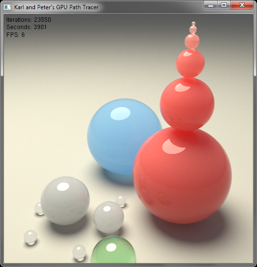
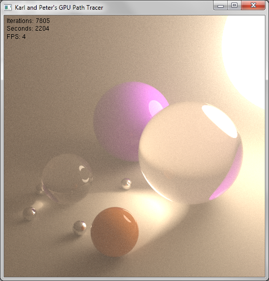
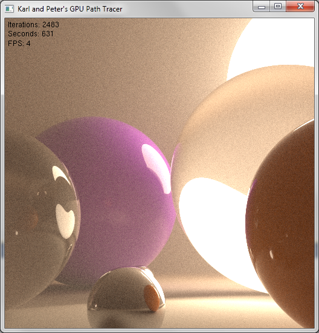
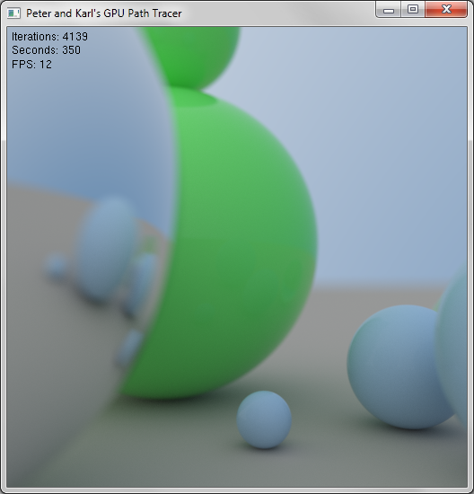
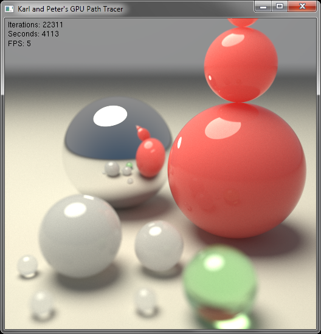
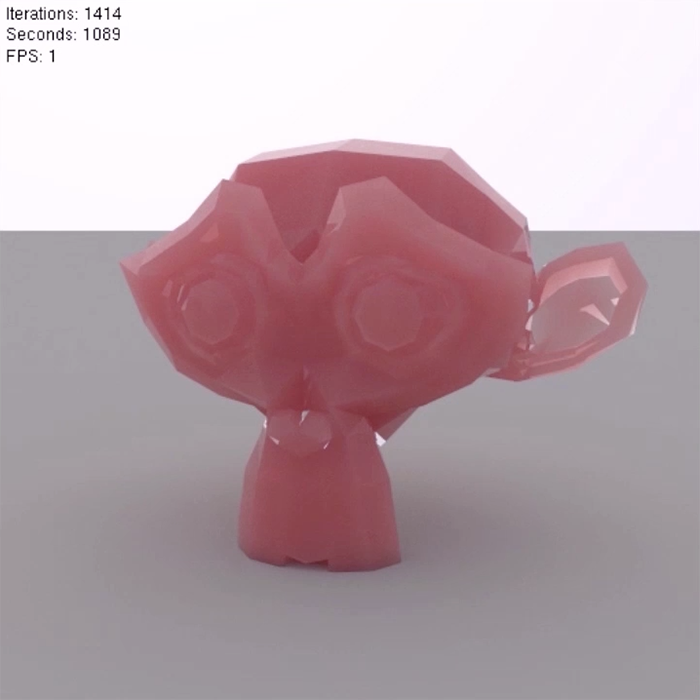
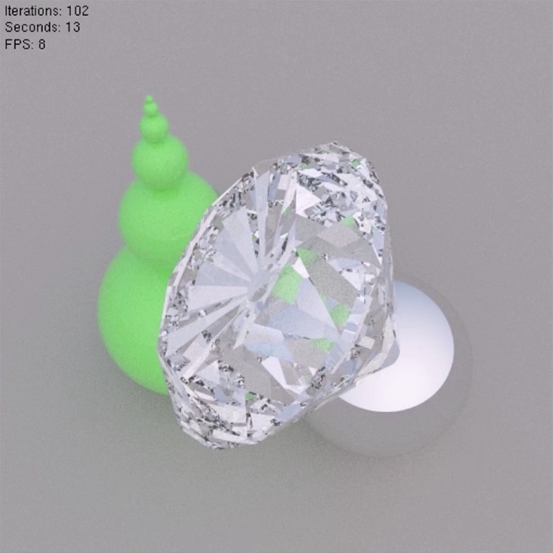

GPU Pathtracer
An experimental GPU Pathtracer, in collaboration with
Peter Kutz

A screenshot of our experimental renderer running in realtime on a scene of some spheres with subsurface scattering properties.
Overview
For our spring 2012 CIS565: GPU Programming final project, my friend Peter Kutz and I developed a prototype, experimental GPU pathtracing renderer using NVIDIA's CUDA language and toolset. The purpose of the project was the explore the feasibility of building high performance, unbiased, physically based renderers using massively parallel architectures such as NVIDIA GPUs, and to inform future projects. Much of the experience and knowledge gained in this project has since been reapplied to Takua Render project.
Features
CUDA Acceleration: Our experimental renderer is written entirely in CUDA and utilizes the mass parallel nature of the GPU to achieve order of magnitude speed increases over CPU based pathtracing.
Global Illumination: Full, physically based, unbiased indirect illumination rendering through unidirectional Monte-carlo pathtracing with support for an arbitrary number of arbitrarily shaped light sources.
Geometry: Supports spheres, infinite planes, and obj mesh loading (without any acceleration structure).
Materials: Supports physically based diffuse and perfect specular reflections, transmission and refraction, and brute force subsurface scatter. Also supports atmospheric scattering and absorption.
Skydome: Includes a highly simplified skydome system to provide illumination from the sky determined by a simple view-dependent color gradient.
Camera Effects: Supports physically correct depth of field through simulation of aperture shape and size and lens shape. Supports realtime gamma correction of the render view.
Interactive Camera: Allows for realtime control of the camera's position, view, and orientation and realtime updating of the render.
Architecture: Compiles on Windows with dependencies on the CUDA runtime and CUDA 4.x SDK. Aside from CUDA, the only other dependencies are the C++11 Standard Library and GLUT.
Selected Images and Videos

A render demonstrating atmospheric scatter and absorption.

A closer-up render demonstrating atmospheric scatter and absorption.

A render demonstrating physically based depth of field and our simplified skydome system.

A render showcasing subsurface scattering and physically based depth of field.

The standard Suzanne test model rendered with subsurface scattering.

A diamond mesh demonstrating transmission, refraction, and total internal reflection.
Our final presentation video summarizing the capabilities of the final prototype renderer.
Acknowledgements
This project would not be possible without the guidance of Patrick Cozzi, the instructor for CIS565 in the spring of 2012, and also Dr. Joseph T. Kider. We would also like to thank CIS565 TA Varun Sampath. Friends Gabriel Leung, Xing Du, and Dan Knowlton acted as sounding boards for various ideas and discussed ideas. Finally, and most importantly, I have to thank Peter Kutz for being a brilliant partner on this project.
Project Blog Posts
Our progress updates for our experimental GPU pathtracer were posted to our project development blog, Peter and Karl's GPU Pathtracer Blog. The following posts detail the development of this project. Posts are listed starting with the most recent:
Resources
In the process of building our simulator, we have drawn upon the following papers, books, and articles. They are listed in no particular order.
CIS565 GPU Programming Notes: The class notes and slides for CIS565: GPU Programming, created by instructor Patrick Cozzi and TA Varun Sampath.
Active Thread Compaction for GPU Pathtracing: Ingo Wald's 2011 paper on thread compaction as an acceleration technique for GPU pathtracing.
Reflections and Refraction in Raytracing: A paper detailing the math behind reflection and refraction, by Bram de Greve.
Writing A Pathtracer: An incomplete, but nonetheless useful primer on some basic pathtracing concepts, by Nikita Nikishin.
Wikipedia Pathtracer Article: A fairly concise description of the pathtracing concept.
Ray Tracey's Blog: Sam Lampere (Ray Tracey)'s blog following the development of OTOY's Brigade Engine.
{kind=link}
{kind=link}
{kind=link}
{kind=link}
{kind=link}
{kind=link}
{kind=link}